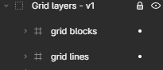

The asset typically contains 3 layers:
Understanding the asset
The grid lines
Grid blocks
The reveal mask
The reveal mask is responsible for showing the asset. The mask contains blobs which act as alpha (visibility layer) for the grids.
The mask contains blobs which act as alpha (visibility layer) for the grids.